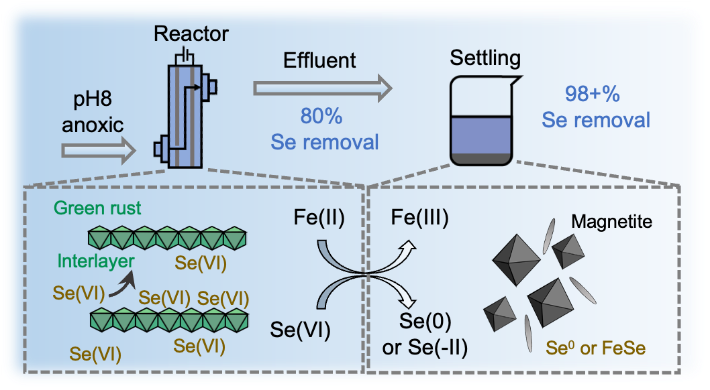

Publications

Selenium(VI) removal from challenge waters by continuous-flow-through iron electrocoagulation
Environmental Science & Technology. 2025, 59, 33, 17909-17921.

Selenium(VI) removal by continuous flow-through iron electrocoagulation: Effects of operating conditions and stability of selenium in residual solids
Environmental Science & Technology. 2025, 59, 10, 5359-5369. (Highlighted by WashU Newsroom)
Advancing selenium(VI) removal by iron electrocoagulation: Roles of water chemistry and operating conditions
ACS ES&T Engineering. 2025, 5, 7, 1821-1830.
Competitive and cooperative effects of chloride on palladium(II) adsorption to iron (oxyhydroxides: Implications for mobility during weathering
Geochimica et Cosmochimica Acta. 2025, 391, 203-217.

Adsorption of neodymium, dysprosium, and ytterbium to goethite under varying aqueous chemistry conditions
ACS Earth and Space Chemistry. 2024, 8, 6, 1224-1235.

Arsenic removal by continuous flow-through iron electrocoagulation and downstream steps under environmentally relevant conditions
Submitted to Environmental Science & Technology.
Dynamics of Selenium Concentrations During and After Iron Electrocoagulation Treatment
In revision.
Effects of common anions and natural organic matter on selenium(VI) removal by iron electrocoagulation
In revision.
Comming soon
Chemical and physical processes governing chromium(VI) removal by continuous flow-through iron electrocoagulation for drinking water treatment
In preparation.
Review of electrocoagulation systems: Mechanism and applications
In preparation.